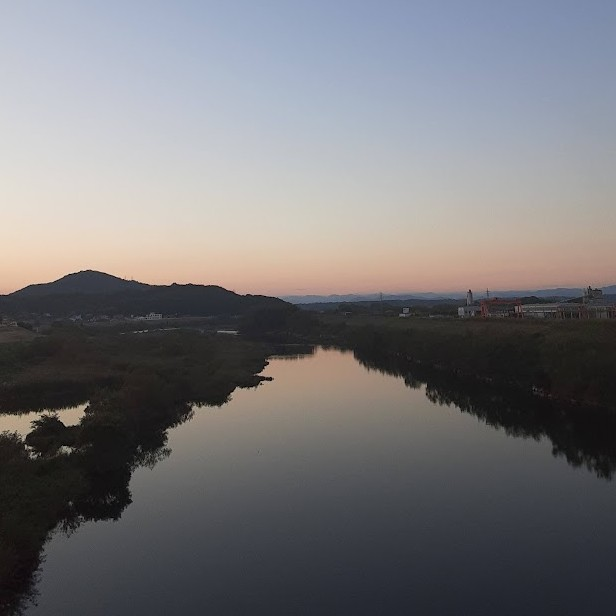
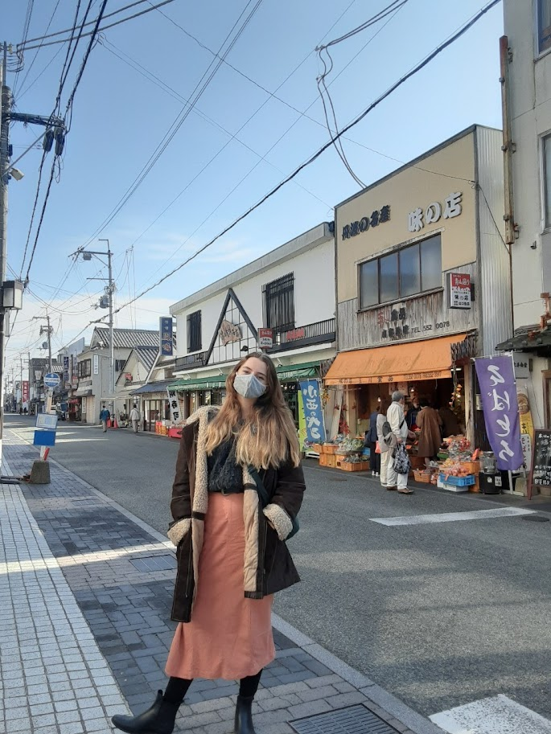

Nishiwaki
Hyogo
Fun fact: Nishiwaki is called the belly button of Japan because if japan is a person its right where the belly button would be!
After spending the first nine months of my mission in America, I was finally approved to go to Japan. My first area in Japan was a middle-of-nowhere town called Nishiwaki. It was so simple and quiet, and because I knew nothing about living in Japan, I started to assume the whole country was like it. Everyone was so friendly, and they all worked hard together to build up the community. There was a cute local café there that I also loved, and if I had more free money, I would have eaten there every day. I was also surprised by the lack of grass!
 